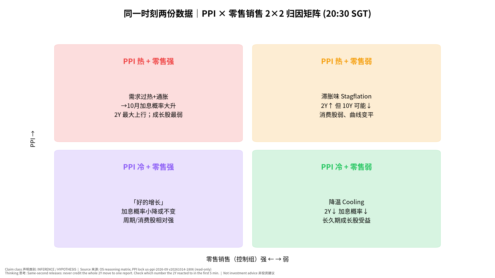
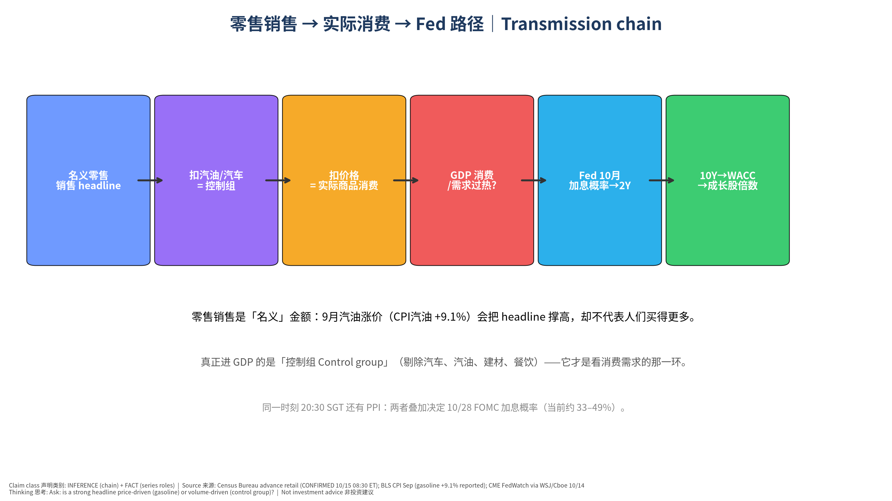
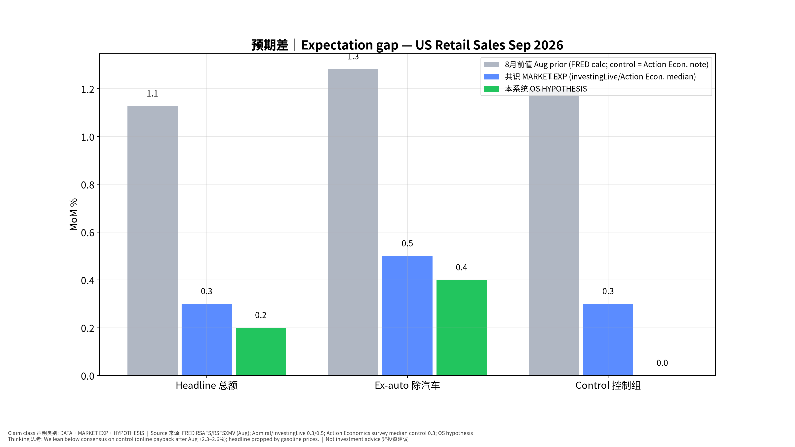
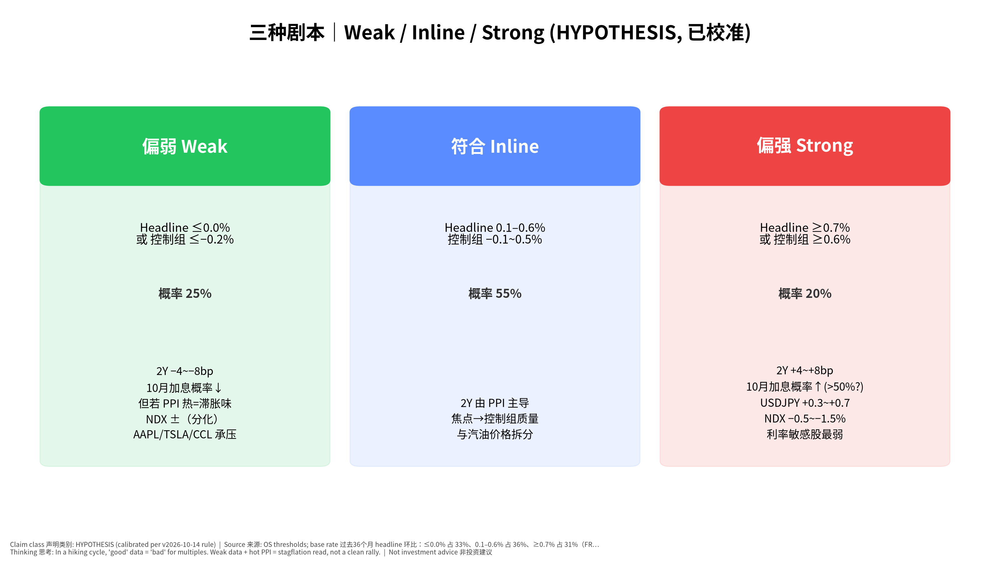
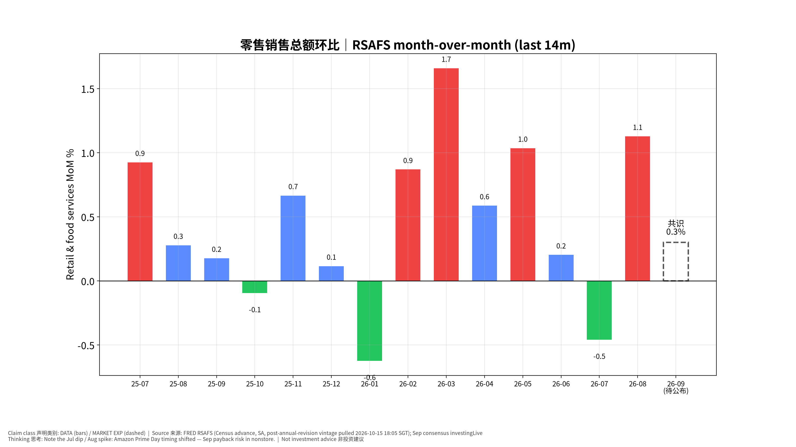

美国9月零售销售
发布前事件书｜US Retail Sales (Sep 2026) Pre-Event Book —
专业中文版
发布时间：2026-10-15（周四）08:30 美东 = 20:30 新加坡时间
(SGT)｜状态
CONFIRMED（census.gov/retail/release_schedule.html：September
2026 → October 15, 2026, 8:30 am） 同一时刻：PPI（已于 v20261014-1806
独立锁定，本书不改写）、初请失业金、费城联储、纽约联储制造业指数。次日：进口价格（周五
20:30 SGT）、工业产出（周五 21:15 SGT）。
发布前快照锁定：2026-10-15 18:05 SGT（版本
v20261015-1805）。本文件不会在事后改写。非投资建议｜Not investment
advice。标签：FACT｜DATA｜MARKET
EXP｜HYPOTHESIS｜INFERENCE｜UNCERTAINTY。
⏱ 30秒看懂
- 发生什么：今晚 20:30 SGT
公布美国9月零售销售（Retail
Sales｜美国人在商店、网上、餐厅花了多少钱）——和 PPI 同一秒公布。
- 和我的股票有什么关系：美联储9月刚加息到
3.75–4.00%，昨晚 CPI 偏热后市场给 10/28 再加息约 33–49% 概率。消费太强 =
更可能加息 = 利率敏感的成长股（ARM/PLTR/RKLB/CRWV）承压；AAPL、TSLA、CCL
直接看消费。
- 该看什么/做什么：只盯一个数：控制组 Control
group（共识 +0.3%）。≤−0.2% 偏弱，≥+0.6%
偏强；再问：总额高是不是只因为汽油变贵？
🗺 阅读地图
| 你有多少时间 |
读哪里 |
| 2 分钟 |
⏱30秒 + 第4节观察清单。 |
| 10 分钟 |
第1–3节 + 图01/03/05：名义 vs 实际、三种剧本、PPI×零售矩阵。 |
| 30 分钟 |
全文 + 思考过程（第7节）+ 教学版 + 测验 + 事后作业。 |
层级说明：L1 故事（人人能懂）→ L2
关键数字（带解释）→ L3
专业细节（网页可折叠，默认收起）。
0. 背景事实 Context (FACT /
DATA)
- 政策利率：FOMC 9/16 加息 25bp 至
3.75–4.00%（FRED DFEDTARU=4.00；Warsh
发布会称「移除一剂宽松 a dose of
accommodation」，并拒绝预判下一步）。
- 昨晚 CPI（锁定书 us-cpi-2026-09
已出事后复盘）：整体 +0.6% 环比 / 3.7%
同比，核心 +0.3% / 2.6%；汽油涨
9.1%（媒体报道）。
- 市场定价（MARKET EXP）：10/28 加息概率 CPI 前约 22%
→ 公布后 41.5%（CME FedWatch，10/14 12:20 ET）/ 49%（WSJ 引 CME）/
收盘约 32.7%（Cboe）——波动大，以发布前最新为准。
- 利率：2Y 4.79%、10Y
5.21%（FRED，2026-10-13）。
- 8月零售（FRED，年度修订后）：总额
+1.13%、除汽车 +1.28%（首发曾为 +1.2%
/ +1.4%）；网购 8 月 +2.3~2.6%（Prime Day 时间错位，Action Economics /
Continuum）。
1. 执行摘要 Executive Summary
- 共识 (MARKET EXP)：总额
+0.3%、除汽车 +0.5%（investingLive
周历，经 Admiral Markets 10/14 转引；Action Economics
调查中位数相同），控制组 +0.3%（Action Economics
调查中位数，区间 −0.1~+0.5%）。
- 我们 (HYPOTHESIS)：总额
+0.2%、除汽车 +0.4%、控制组
0.0%——比共识偏软。理由：①8 月网购
+2.3~2.6% 的 Prime Day 错位在 9 月回吐（网购约占控制组
28%）；②汽油涨价撑高名义总额、却挤压实际购买力；③两家独立预览（Action
Economics 控制组 −0.1%、Continuum 除汽车与汽油
−0.1%）均偏软。UNCERTAINTY：我们没有独立的刷卡数据模型，偏离共识的依据是二手预览，置信度中等偏低。
- 情景概率（已按 v2026-10-14 规则校准）：偏弱 25% /
符合 55% / 偏强 20%。基础概率：过去36个月 headline 环比：≤0.0% 占
33%、0.1–0.6% 占 36%、≥0.7% 占 31%（FRED RSAFS
计算）。校准：未触发（所有情景与基础概率差距 ≤20pp）。
- 为什么重要：在加息周期里，「消费强」= 「需求过热」=
更可能 10 月加息（坏消息对估值倍数）；「消费弱 + PPI 热」=
滞胀味——不是干净的利好。
- 观察名单：消费直连
AAPL、TSLA（汽车销售）、CCL（可选消费/旅游）；利率敏感
ARM、PLTR、RKLB、CRWV、CRWD；AI
资本开支链（NVDA/AVGO/TSM）主要受今天台积电财报叙事主导，零售数据只通过
2Y/10Y 间接影响。
2. 共识 vs 我们 Expectation
Gap
| 指标 |
8月前值 (DATA) |
共识 MARKET EXP |
来源/日期 |
我们 HYPOTHESIS |
差（我们−共识） |
| 总额 Headline MoM |
+1.13%（首发 +1.2%） |
+0.3% |
investingLive via Admiral 10/14；Action Econ. 中位数 |
+0.2% |
−0.1 |
| 除汽车 Ex-auto MoM |
+1.28%（首发 +1.4%） |
+0.5% |
同上 |
+0.4% |
−0.1 |
| 控制组 Control MoM |
+1.2%（Action Econ. 引述） |
+0.3% |
Action Econ. 调查中位数（区间 −0.1~+0.5） |
0.0% |
−0.3 |
分析师备选（非共识，仅作对照）
| 机构 |
预测 |
类别 |
| Action Economics (Oct 13 survey note) |
headline +0.1% / ex_auto +0.3% / control -0.1% |
分析师观点（非共识） |
| Continuum Economics (Oct 14) |
headline +0.1% / ex_auto +0.4% / ex_auto_gas -0.1% |
分析师观点（非共识） |
| Wells Fargo (Oct 9 week ahead) |
headline +0.4% |
分析师观点（非共识） |
3. 情景树 Scenarios
(HYPOTHESIS)
| 情景 |
阈值 |
原始概率 |
基础概率 |
校准后 |
2Y |
10Y |
USD/JPY |
NDX |
受影响最大 |
| 偏弱 Weak |
总额 ≤0.0% 或 控制组 ≤−0.2% |
25% |
33% |
25% |
−4~−8bp |
−2~−6bp |
−0.3~−0.6 |
若 PPI 冷：+0.5~+1%；若 PPI 热：分化 |
AAPL/TSLA/CCL ↓，长久期成长 ↑ |
| 符合 Inline |
总额 0.1–0.6%；控制组 −0.1~0.5% |
55% |
36% |
55% |
由 PPI 主导 |
由 PPI 主导 |
— |
±0.5% |
看控制组质量 |
| 偏强 Strong |
总额 ≥0.7% 或 控制组 ≥0.6% |
20% |
31% |
20% |
+4~+8bp |
+3~+6bp |
+0.3~+0.7 |
−0.5~−1.5% |
ARM/PLTR/RKLB/CRWV ↓ |
反应幅度为数量级示意（HYPOTHESIS），不是交易信号。关键子情景：总额
≥0.7% 但控制组 ≤0.1% = 汽油/价格推动的「假强」，债市可能先涨后回。
4.
发布时观察清单 Live-Observation Checklist（20:30 SGT 10/15）
先填实际值，再看标题；先看控制组，再看总额。
| # |
看什么 |
偏弱 |
偏强 |
初学者注释 |
| 1 |
控制组 Control group 环比 |
≤−0.2% |
≥+0.6% |
进 GDP 的那部分；共识 +0.3%，我们 0.0% |
| 2 |
总额 Headline 环比 |
≤0.0% |
≥0.7% |
共识 +0.3%；汽油贵会「虚高」 |
| 3 |
加油站销售 Gasoline stations |
— |
大涨 |
若总额强主要来自这里 → 价格不是数量 |
| 4 |
无店铺/网购 Nonstore |
明显负 |
再涨 |
检验「Prime Day 回吐」假设（我们偏软的核心理由） |
| 5 |
汽车 Motor vehicles |
负 |
正 |
行业数据显示 9 月汽车销售走弱 → TSLA 叙事 |
| 6 |
8 月修正 Revisions |
下修 |
上修 |
下修 0.3pp 以上 = 等于额外一次「偏弱」 |
| 7 |
餐饮 Food services |
负 |
强 |
服务类消费唯一窗口 → CCL 等旅游消费 |
| 8 |
2Y 首 15 分钟 |
≤−4bp |
≥+4bp |
注意：同一秒还有 PPI，见图05矩阵归因 |
| 9 |
初请 Initial claims（共识约 195–200k，前值 197k） |
≥215k |
≤190k |
劳动市场若松动，Fed 更可能等到 12 月 |
| 10 |
费城联储（共识 28.4，前值 37.8）/ 纽约联储（共识 10.3，前值
7.6） |
大幅低于 |
大幅高于 |
共识来自 ITC Daily Calendar 10/15；价格分项更重要 |

2×2 矩阵
📊 怎么看这张图
- 坐标/颜色：横轴=零售（控制组）强弱，纵轴=PPI
冷热；四格=四种组合的市场含义。
- 只记住一件事：两份数据同时出来，2Y
的反应是「合成」的——先看哪份更出乎意料。
- 什么会改变结论：若 2Y 在 PPI
偏热时反而下行，说明市场在交易「增长担忧」而不是通胀。
5. 受影响观察名单
- 消费直连：AAPL（高端消费韧性；iPhone
周期）、TSLA（汽车销售 +
利率敏感双重）、CCL（可选消费/旅游；餐饮分项是代理变量）。
- 利率路径（与 CPI/PPI
书同一敏感度框架）：ARM、PLTR、RKLB、CRWV、CRWD、MRVL——偏强情景下最弱。
- AI 链：NVDA、AVGO、TSM、MU
今日主驱动是台积电财报（14:00 SGT 已开完，事后复盘归入下一份
Daily），零售只经由 2Y/10Y
间接影响——归因时勿混淆。
- USD/JPY：偏强情景 → 美日利差扩大 → 日元走弱；关注
BOJ 10/29–30 前的套息交易拥挤（Carry stress）。
6. 证伪条件 Falsifiers
- 控制组 ≥+0.5%（且网购未回吐）→ 我们「Prime Day 回吐」假设错误 → 记
Fundamental Forecast 误差，上调消费韧性先验。
- 偏强但 2Y 升幅 <2bp → 市场只认 PPI/Fed 讲话，零售对当前 Fed
反应函数权重低。
- 偏弱但 AAPL/TSLA/CCL 上涨 → 市场在交易「利率下行」而非「需求转弱」→
本书的消费股传导失效。
- 总额强、控制组弱，但 10Y 盈亏平衡通胀大涨 →
市场担心汽油二次传导，「价格虚高可看穿」假设失效。
- 8 月大幅上修（≥0.3pp）而 9 月符合 →
水平更高，实际是偏强；只看环比会误判。
7. 思考过程 Thinking
walkthrough（七步法）
- 先问对问题：谁在乎、为什么在乎：谁在乎？美联储（10/28
是否连续加息）、债市（2Y）、消费股。为什么？在加息周期里，需求强弱决定
Fed 要不要继续「移除宽松」。
- 市场已经定价了什么：共识 +0.3% 已经假设 8
月大涨后放缓；10 月加息约
33–49%——市场把「强消费」部分计入。只有「实际−共识」会动价格。
- 搭因果链，每环配一个检验数据：零售名义额
→（扣汽油价格：CPI 汽油 +9.1%）→ 控制组 → 实际商品消费 → GDP → Fed
判断需求是否过热 → 2Y → 10Y → WACC →
成长股倍数。每环检验数据：加油站分项、控制组、BEA
实际消费（10/29）、FedWatch、2Y、10Y、NDX。
- 找每一环的断点：断点①汽油虚高（名义≠实际）；断点②PPI
同时公布，2Y 反应混合；断点③Warsh 明早 11:30 SGT
讲话可能盖过数据；断点④8 月修正改变基数。
- 用工具箱逐一质疑：见下方工具。
- 给对立观点最强版本，再用证据裁判：见「对立观点」。
- 写下「如果我错了，会先看到什么」：如果我错了，会先看到「网购
Nonstore 分项仍为正、控制组 ≥+0.4%」。
二阶思维 Second-order
- 是什么：然后呢？谁会因此改变行为？
- 为什么用：零售数据本身不改变公司利润，它改变的是
Fed 的判断。
- 用在本事件上：控制组 +0.6% → FedWatch 10
月加息概率可能从约 40% 升至 >55% → 2Y +5bp → 按 CPI
书的敏感度框架，高估值股承压。一阶是「消费好=消费股好」，二阶是「消费好=加息=估值降」。
- ✍ 轮到你：如果控制组 −0.3%，同时 PPI
0.7%，二阶效果是什么？写下你的答案再看图05。
市场已经定价了什么 Priced-in
- 是什么：只有「实际−预期」推动价格。
- 为什么用：8 月 +1.1% 很强，共识已经预期放缓到
+0.3%。
- 用在本事件上：若公布 +0.3%：虽然比 8
月「大幅放缓」，标题会写「零售放缓」，但这是「符合」——不应引发大反应。
- ✍ 轮到你：如果标题写「零售销售大幅放缓」而实际 =
共识，你会怎么判断市场反应？
基础概率 Base rates
- 是什么：这类结果历史上多常见？
- 为什么用：防止我们对「偏软」过度自信。
- 用在本事件上：过去36个月 headline 环比：≤0.0% 占
33%、0.1–0.6% 占 36%、≥0.7% 占 31%（FRED RSAFS 计算）。我们给偏弱
25%，与基础概率比较后：未触发（所有情景与基础概率差距 ≤20pp）。
- ✍ 轮到你：把阈值改成控制组
≤0.0%，你觉得基础概率会更高还是更低？为什么？
我们的观点：9 月零售偏软（控制组约
0.0%），主要是网购回吐 + 汽油挤压实际购买力。
对立观点最强版本： 1. 8 月 BEA
年度修订显示家庭收入更强（Wells Fargo），消费有更多支撑，可能不回吐。 2.
股市财富效应（指数高位）与工资增长仍支撑高收入人群消费。 3. 共识 +0.3%
是许多机构的中位数，我们只依赖两家偏软预览，样本偏差。
| 证据 |
支持我们 |
支持对立 |
权重 |
| Action Economics 控制组 −0.1% |
✔ |
|
中 |
| Continuum 除汽车与汽油 −0.1% |
✔ |
|
中 |
| Wells Fargo 总额 +0.4%，收入修订上调 |
|
✔ |
中 |
| Redbook 周数据 9 月动能略降（Continuum 引述） |
✔ |
|
低 |
| 8 月网购 +2.3~2.6% 一次性 |
✔ |
|
高 |
裁判：证据略偏向我们，但不足以高信心偏离共识——所以我们只把控制组下调
0.3pp，并把「符合」保持为最大概率情景。
8. 最终自我质疑 Final
Self-Challenge
- 我们偏软的理由几乎都来自二手预览；如果那些机构本身有「偏软」历史偏差，我们是在复制别人的错误。
- 今晚真正主导 2Y 的可能是
PPI，而不是零售——我们是否高估了这份数据的市场意义？
- 加息周期中「强=坏」的映射可能在财报季被盈利叙事打断（TSM
指引）；不要把 NDX 的全部涨跌归因给零售。
9. 周五次日：工业产出
& 进口价格（简表，Post only）
- 进口价格 Import prices（9 月）：周五 08:30 ET = 20:30
SGT，CONFIRMED（bls.gov）。观察：油价推动 vs
非油进口价格（关税/美元）。
- 工业产出与产能利用率 IP & Capacity Utilization（9 月）：周五
09:15 ET = 21:15 SGT，CONFIRMED（federalreserve.gov
G.17 日历）。8 月 IP 指数 103.07（FRED INDPRO，环比约
+0.02%）。共识本书未核实 → 不编造；复盘归入下一份 Daily OS。
10. Source Ledger
| 来源 |
日期 |
用途 |
类别 |
| census.gov/retail/release_schedule.html |
查证 2026-10-15 |
发布时间 CONFIRMED |
FACT |
| Admiral Markets preview（引 investingLive 周历） |
2026-10-14 |
共识 0.3% / 0.5% |
MARKET EXP |
| Action Economics 调查（Indicator survey PDF） |
2026-10-13 |
中位数 0.3/0.5/0.3、区间；自家预测 0.1/0.3/−0.1 |
MARKET EXP + Analyst |
| Continuum Economics preview |
2026-10-14 |
0.1 / 0.4 / ex auto&gas −0.1 |
Analyst |
| Wells Fargo Economics Week Ahead |
2026-10-09 |
0.4%；年度修订说明 |
Analyst |
| ITC G10 Daily Calendar |
2026-10-15 |
初请/费城/纽约联储共识 |
MARKET EXP |
| FRED RSAFS / RSFSXMV / INDPRO / DGS2 / DGS10 / DFEDTARU |
拉取 2026-10-15 18:05 SGT |
前值、历史、利率 |
DATA |
| federalreserve.gov 9/16 发布会实录 |
2026-09-16 |
加息至 3.75–4.00%，「a dose of accommodation」 |
FACT |
| CME FedWatch via Yahoo/Benzinga, WSJ, Cboe |
2026-10-14 |
10 月加息概率 22%→41.5%/49%/32.7% |
MARKET EXP |
| us-cpi-2026-09 post v20261015-0800；us-ppi-2026-09 pre
v20261014-1806 |
锁定 |
联动，不改写 |
Locked |
11. Assumption Register
- investingLive/Action Economics
中位数可作街共识代理（ASSUMPTION）；若 Bloomberg
调查中位数不同，复盘时注明。
- 网购回吐幅度足以把控制组拉到约 0.0%（HYPOTHESIS；证伪见
§6-1）。
- 当前 Fed 反应函数对「需求强」敏感（INFERENCE，依据 Warsh
9/16「金融条件并不紧」表述）。
- 反应幅度为数量级示意（HYPOTHESIS）。
12. Model Provenance
Builder pipeline/build_1015_pre.py；版本
v20261015-1805；FRED 实时拉取；校准规则
calibration.apply_rule（v2026-10-14）。Excel
含活公式（意外值、情景判定、概率加权期望）。
图表 Charts

传导链
📊 怎么看这张图
- 坐标/颜色：方框从左到右=因果顺序；箭头=传导。
- 只记住一件事：名义零售 ≠
实际消费：汽油涨价会让数字「看起来强」。
- 什么会改变结论：若控制组强（不仅是汽油），链条后半段（Fed→2Y）才真正被触发。

预期差
📊 怎么看这张图
- 坐标/颜色：灰=8月前值，蓝=共识，绿=我们。
- 只记住一件事：我们最大分歧在控制组（0.0 vs
0.3）。
- 什么会改变结论：网购分项若仍为正，我们的绿柱就是错的。


📊 怎么看这张图
- 坐标/颜色：每根柱=一个月的零售环比；红≥0.7、绿≤0.0。
- 只记住一件事：7 月低、8 月高是 Prime Day
时间错位；9 月可能回吐。
- 什么会改变结论：若 9 月仍
≥0.7，说明不是错位，而是消费真强。
13. 事后作业
Post-event homework（发布后填写，不改本书）
| 环节 |
成立/断开 |
证据 |
学到什么 |
| ①零售意外→Fed 10月预期 |
____ |
____ |
____ |
| ②→2年期 |
____ |
____ |
____ |
| ③→10年期 |
____ |
____ |
____ |
| ④→折现率 |
____ |
____ |
____ |
| ⑤→AAPL/TSLA/CCL 与成长股 |
____ |
____ |
____ |